Customer Segmentation Analysis Example#
Credit card customer segmentation: https://www.kaggle.com/datasets/thedevastator/predicting-credit-card-customer-attrition-with-m/data
import pandas as pd
data=pd.read_csv('BankChurners.csv')
data.info()
<class 'pandas.core.frame.DataFrame'>
RangeIndex: 10127 entries, 0 to 10126
Data columns (total 23 columns):
# Column Non-Null Count Dtype
--- ------ -------------- -----
0 CLIENTNUM 10127 non-null int64
1 Attrition_Flag 10127 non-null object
2 Customer_Age 10127 non-null int64
3 Gender 10127 non-null object
4 Dependent_count 10127 non-null int64
5 Education_Level 10127 non-null object
6 Marital_Status 10127 non-null object
7 Income_Category 10127 non-null object
8 Card_Category 10127 non-null object
9 Months_on_book 10127 non-null int64
10 Total_Relationship_Count 10127 non-null int64
11 Months_Inactive_12_mon 10127 non-null int64
12 Contacts_Count_12_mon 10127 non-null int64
13 Credit_Limit 10127 non-null float64
14 Total_Revolving_Bal 10127 non-null int64
15 Avg_Open_To_Buy 10127 non-null float64
16 Total_Amt_Chng_Q4_Q1 10127 non-null float64
17 Total_Trans_Amt 10127 non-null int64
18 Total_Trans_Ct 10127 non-null int64
19 Total_Ct_Chng_Q4_Q1 10127 non-null float64
20 Avg_Utilization_Ratio 10127 non-null float64
21 Naive_Bayes_Classifier_Attrition_Flag_Card_Category_Contacts_Count_12_mon_Dependent_count_Education_Level_Months_Inactive_12_mon_1 10127 non-null float64
22 Naive_Bayes_Classifier_Attrition_Flag_Card_Category_Contacts_Count_12_mon_Dependent_count_Education_Level_Months_Inactive_12_mon_2 10127 non-null float64
dtypes: float64(7), int64(10), object(6)
memory usage: 1.8+ MB
data['Attrition_Flag'].value_counts()
Existing Customer 8500
Attrited Customer 1627
Name: Attrition_Flag, dtype: int64
data['Education_Level'].value_counts()
Graduate 3128
High School 2013
Unknown 1519
Uneducated 1487
College 1013
Post-Graduate 516
Doctorate 451
Name: Education_Level, dtype: int64
data['Marital_Status'].value_counts()
Married 4687
Single 3943
Unknown 749
Divorced 748
Name: Marital_Status, dtype: int64
data['Income_Category'].value_counts()
Less than $40K 3561
$40K - $60K 1790
$80K - $120K 1535
$60K - $80K 1402
Unknown 1112
$120K + 727
Name: Income_Category, dtype: int64
data['Card_Category'].value_counts()
Blue 9436
Silver 555
Gold 116
Platinum 20
Name: Card_Category, dtype: int64
data.describe()
| CLIENTNUM | Customer_Age | Dependent_count | Months_on_book | Total_Relationship_Count | Months_Inactive_12_mon | Contacts_Count_12_mon | Credit_Limit | Total_Revolving_Bal | Avg_Open_To_Buy | Total_Amt_Chng_Q4_Q1 | Total_Trans_Amt | Total_Trans_Ct | Total_Ct_Chng_Q4_Q1 | Avg_Utilization_Ratio | Naive_Bayes_Classifier_Attrition_Flag_Card_Category_Contacts_Count_12_mon_Dependent_count_Education_Level_Months_Inactive_12_mon_1 | Naive_Bayes_Classifier_Attrition_Flag_Card_Category_Contacts_Count_12_mon_Dependent_count_Education_Level_Months_Inactive_12_mon_2 | |
|---|---|---|---|---|---|---|---|---|---|---|---|---|---|---|---|---|---|
| count | 1.012700e+04 | 10127.000000 | 10127.000000 | 10127.000000 | 10127.000000 | 10127.000000 | 10127.000000 | 10127.000000 | 10127.000000 | 10127.000000 | 10127.000000 | 10127.000000 | 10127.000000 | 10127.000000 | 10127.000000 | 10127.000000 | 10127.000000 |
| mean | 7.391776e+08 | 46.325960 | 2.346203 | 35.928409 | 3.812580 | 2.341167 | 2.455317 | 8631.953698 | 1162.814061 | 7469.139637 | 0.759941 | 4404.086304 | 64.858695 | 0.712222 | 0.274894 | 0.159997 | 0.840003 |
| std | 3.690378e+07 | 8.016814 | 1.298908 | 7.986416 | 1.554408 | 1.010622 | 1.106225 | 9088.776650 | 814.987335 | 9090.685324 | 0.219207 | 3397.129254 | 23.472570 | 0.238086 | 0.275691 | 0.365301 | 0.365301 |
| min | 7.080821e+08 | 26.000000 | 0.000000 | 13.000000 | 1.000000 | 0.000000 | 0.000000 | 1438.300000 | 0.000000 | 3.000000 | 0.000000 | 510.000000 | 10.000000 | 0.000000 | 0.000000 | 0.000008 | 0.000420 |
| 25% | 7.130368e+08 | 41.000000 | 1.000000 | 31.000000 | 3.000000 | 2.000000 | 2.000000 | 2555.000000 | 359.000000 | 1324.500000 | 0.631000 | 2155.500000 | 45.000000 | 0.582000 | 0.023000 | 0.000099 | 0.999660 |
| 50% | 7.179264e+08 | 46.000000 | 2.000000 | 36.000000 | 4.000000 | 2.000000 | 2.000000 | 4549.000000 | 1276.000000 | 3474.000000 | 0.736000 | 3899.000000 | 67.000000 | 0.702000 | 0.176000 | 0.000181 | 0.999820 |
| 75% | 7.731435e+08 | 52.000000 | 3.000000 | 40.000000 | 5.000000 | 3.000000 | 3.000000 | 11067.500000 | 1784.000000 | 9859.000000 | 0.859000 | 4741.000000 | 81.000000 | 0.818000 | 0.503000 | 0.000337 | 0.999900 |
| max | 8.283431e+08 | 73.000000 | 5.000000 | 56.000000 | 6.000000 | 6.000000 | 6.000000 | 34516.000000 | 2517.000000 | 34516.000000 | 3.397000 | 18484.000000 | 139.000000 | 3.714000 | 0.999000 | 0.999580 | 0.999990 |
(data['Credit_Limit']-data['Total_Revolving_Bal']-data['Avg_Open_To_Buy']).mean()
-2.301352990316114e-16
data['Naive_Bayes_Classifier_Attrition_Flag_Card_Category_Contacts_Count_12_mon_Dependent_count_Education_Level_Months_Inactive_12_mon_1']
0 0.000093
1 0.000057
2 0.000021
3 0.000134
4 0.000022
...
10122 0.000191
10123 0.995270
10124 0.997880
10125 0.996710
10126 0.996620
Name: Naive_Bayes_Classifier_Attrition_Flag_Card_Category_Contacts_Count_12_mon_Dependent_count_Education_Level_Months_Inactive_12_mon_1, Length: 10127, dtype: float64
pd.get_dummies?
data_dummy = pd.get_dummies(data.drop('CLIENTNUM',axis=1))
data_dummy.info()
<class 'pandas.core.frame.DataFrame'>
RangeIndex: 10127 entries, 0 to 10126
Data columns (total 41 columns):
# Column Non-Null Count Dtype
--- ------ -------------- -----
0 Customer_Age 10127 non-null int64
1 Dependent_count 10127 non-null int64
2 Months_on_book 10127 non-null int64
3 Total_Relationship_Count 10127 non-null int64
4 Months_Inactive_12_mon 10127 non-null int64
5 Contacts_Count_12_mon 10127 non-null int64
6 Credit_Limit 10127 non-null float64
7 Total_Revolving_Bal 10127 non-null int64
8 Avg_Open_To_Buy 10127 non-null float64
9 Total_Amt_Chng_Q4_Q1 10127 non-null float64
10 Total_Trans_Amt 10127 non-null int64
11 Total_Trans_Ct 10127 non-null int64
12 Total_Ct_Chng_Q4_Q1 10127 non-null float64
13 Avg_Utilization_Ratio 10127 non-null float64
14 Naive_Bayes_Classifier_Attrition_Flag_Card_Category_Contacts_Count_12_mon_Dependent_count_Education_Level_Months_Inactive_12_mon_1 10127 non-null float64
15 Naive_Bayes_Classifier_Attrition_Flag_Card_Category_Contacts_Count_12_mon_Dependent_count_Education_Level_Months_Inactive_12_mon_2 10127 non-null float64
16 Attrition_Flag_Attrited Customer 10127 non-null uint8
17 Attrition_Flag_Existing Customer 10127 non-null uint8
18 Gender_F 10127 non-null uint8
19 Gender_M 10127 non-null uint8
20 Education_Level_College 10127 non-null uint8
21 Education_Level_Doctorate 10127 non-null uint8
22 Education_Level_Graduate 10127 non-null uint8
23 Education_Level_High School 10127 non-null uint8
24 Education_Level_Post-Graduate 10127 non-null uint8
25 Education_Level_Uneducated 10127 non-null uint8
26 Education_Level_Unknown 10127 non-null uint8
27 Marital_Status_Divorced 10127 non-null uint8
28 Marital_Status_Married 10127 non-null uint8
29 Marital_Status_Single 10127 non-null uint8
30 Marital_Status_Unknown 10127 non-null uint8
31 Income_Category_$120K + 10127 non-null uint8
32 Income_Category_$40K - $60K 10127 non-null uint8
33 Income_Category_$60K - $80K 10127 non-null uint8
34 Income_Category_$80K - $120K 10127 non-null uint8
35 Income_Category_Less than $40K 10127 non-null uint8
36 Income_Category_Unknown 10127 non-null uint8
37 Card_Category_Blue 10127 non-null uint8
38 Card_Category_Gold 10127 non-null uint8
39 Card_Category_Platinum 10127 non-null uint8
40 Card_Category_Silver 10127 non-null uint8
dtypes: float64(7), int64(9), uint8(25)
memory usage: 1.5 MB
from scipy.stats import zscore
data_zscore = data_dummy.apply(zscore)
from sklearn.decomposition import PCA
pca = PCA(n_components=len(data_zscore.columns))
pca.fit(data_zscore)
PCA(n_components=41)In a Jupyter environment, please rerun this cell to show the HTML representation or trust the notebook.
On GitHub, the HTML representation is unable to render, please try loading this page with nbviewer.org.
PCA(n_components=41)
from matplotlib import pyplot as plt
import numpy as np
plt.bar(np.arange(1,len(pca.explained_variance_ratio_)+1),pca.explained_variance_ratio_.cumsum())
<BarContainer object of 41 artists>
pca.explained_variance_ratio_.cumsum()[:26]
array([0.11312079, 0.21997251, 0.28144686, 0.32720753, 0.36974346,
0.40898309, 0.44471475, 0.47816118, 0.50986822, 0.54072053,
0.57100135, 0.60088622, 0.63004372, 0.65885286, 0.68686768,
0.71430269, 0.74116512, 0.76729213, 0.79338479, 0.81866618,
0.84319517, 0.86735701, 0.89114888, 0.91451478, 0.93633617,
0.95316929])
from sklearn.decomposition import PCA
pca = PCA(n_components=26)
pca.fit(data_dummy)
PCA(n_components=26)In a Jupyter environment, please rerun this cell to show the HTML representation or trust the notebook.
On GitHub, the HTML representation is unable to render, please try loading this page with nbviewer.org.
PCA(n_components=26)
import numpy as np
import pandas as pd
import matplotlib.pyplot as plt
from sklearn.decomposition import PCA
from sklearn.datasets import load_iris
from sklearn.preprocessing import StandardScaler
# Access the loadings (coefficients)
loadings = pca.components_
# Create a load plot
plt.figure(figsize=(10, 8))
# Plot loadings for the first two principal components
plt.scatter(loadings[0, :], loadings[1, :], marker='o', color='blue')
# Annotate each point with the variable names
for i, var_name in enumerate(data_dummy.columns):
plt.annotate(var_name, (loadings[0, i], loadings[1, i]), color='red')
plt.plot([0,loadings[0,i]], [0, loadings[1,i]])
# Add labels and title
plt.xlabel('PC1 Loadings')
plt.ylabel('PC2 Loadings')
# Add grid lines for reference
plt.axhline(0, color='black', linewidth=0.5)
plt.axvline(0, color='black', linewidth=0.5)
plt.grid()
plt.xlim([-0.0001,0.0001])
plt.ylim([-.0001,0.0001])
# Show the plot
plt.show()
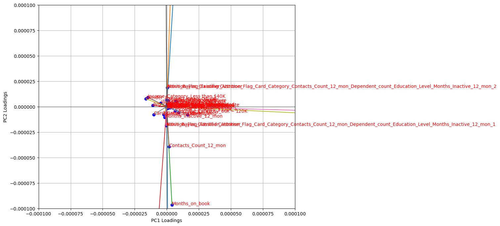
pca.components_.shape
(26, 41)
(pca.components_**2).sum(0)
array([9.99993545e-01, 9.99740965e-01, 9.99998913e-01, 9.99981485e-01,
9.99974722e-01, 9.99956301e-01, 6.66666663e-01, 6.66666647e-01,
6.66666661e-01, 4.29991733e-01, 1.00000000e+00, 9.99997964e-01,
5.70373603e-01, 5.78687704e-03, 2.48252519e-01, 2.48252499e-01,
2.51116420e-01, 2.51116420e-01, 4.26396692e-01, 4.26396692e-01,
8.50522478e-01, 1.57275516e-01, 8.54567672e-01, 8.53967328e-01,
5.80429541e-01, 8.53252054e-01, 8.53211438e-01, 7.49664854e-01,
7.49707610e-01, 7.49912893e-01, 7.49524847e-01, 5.77111826e-01,
7.94546184e-01, 7.68449125e-01, 7.39451863e-01, 6.71699415e-01,
6.11054613e-01, 5.14279837e-01, 1.92140278e-03, 6.08712409e-05,
4.62061313e-01])
pca = PCA(n_components=26)
pca.fit(data_dummy)
columns_scores = pd.DataFrame({
'column': data_dummy.columns,
'score': (pca.components_**2).sum(0)
})
columns_scores.sort_values(by='score',ascending=False).set_index('column').plot.bar()
<Axes: xlabel='column'>
data_pca=pca.transform(data_dummy)
import numpy as np
import matplotlib.pyplot as plt
from sklearn.cluster import KMeans
# Range of k values to test
k_values = range(1, 11)
costs = []
# Compute K-means cost for each k
for k in k_values:
kmeans_model = KMeans(n_clusters=k, random_state=42)
kmeans_model.fit(data_pca)
cost = kmeans_model.inertia_
costs.append(cost)
# Find the optimal number of clusters using the elbow method
optimal_k = 4
optimal_cost = costs[optimal_k - 1]
# Create subplots
fig, axs = plt.subplots(1, 2, figsize=(12, 4))
# Plot the data on the left
axs[0].scatter(data_pca[:, 0], data_pca[:, 1], c='gray', marker='o', edgecolors='k', s=50, linewidth=0.5)
axs[0].set_title('Data points')
axs[0].set_xlabel('Feature 1')
axs[0].set_ylabel('Feature 2')
# Plot the elbow curve on the right
axs[1].plot(k_values, costs, marker='o')
axs[1].set_title('Elbow Method for Optimal k')
axs[1].set_xlabel('Number of Clusters (k)')
axs[1].set_ylabel('Cost')
# Highlight the optimal number of clusters
axs[1].axvline(x=optimal_k, color='red', linestyle='--', label=f'Optimal k = {optimal_k}\nCost = {optimal_cost:.2f}')
axs[1].legend()
plt.tight_layout()
plt.show()
/usr/local/lib/python3.10/dist-packages/sklearn/cluster/_kmeans.py:870: FutureWarning: The default value of `n_init` will change from 10 to 'auto' in 1.4. Set the value of `n_init` explicitly to suppress the warning
warnings.warn(
/usr/local/lib/python3.10/dist-packages/sklearn/cluster/_kmeans.py:870: FutureWarning: The default value of `n_init` will change from 10 to 'auto' in 1.4. Set the value of `n_init` explicitly to suppress the warning
warnings.warn(
/usr/local/lib/python3.10/dist-packages/sklearn/cluster/_kmeans.py:870: FutureWarning: The default value of `n_init` will change from 10 to 'auto' in 1.4. Set the value of `n_init` explicitly to suppress the warning
warnings.warn(
/usr/local/lib/python3.10/dist-packages/sklearn/cluster/_kmeans.py:870: FutureWarning: The default value of `n_init` will change from 10 to 'auto' in 1.4. Set the value of `n_init` explicitly to suppress the warning
warnings.warn(
/usr/local/lib/python3.10/dist-packages/sklearn/cluster/_kmeans.py:870: FutureWarning: The default value of `n_init` will change from 10 to 'auto' in 1.4. Set the value of `n_init` explicitly to suppress the warning
warnings.warn(
/usr/local/lib/python3.10/dist-packages/sklearn/cluster/_kmeans.py:870: FutureWarning: The default value of `n_init` will change from 10 to 'auto' in 1.4. Set the value of `n_init` explicitly to suppress the warning
warnings.warn(
/usr/local/lib/python3.10/dist-packages/sklearn/cluster/_kmeans.py:870: FutureWarning: The default value of `n_init` will change from 10 to 'auto' in 1.4. Set the value of `n_init` explicitly to suppress the warning
warnings.warn(
/usr/local/lib/python3.10/dist-packages/sklearn/cluster/_kmeans.py:870: FutureWarning: The default value of `n_init` will change from 10 to 'auto' in 1.4. Set the value of `n_init` explicitly to suppress the warning
warnings.warn(
/usr/local/lib/python3.10/dist-packages/sklearn/cluster/_kmeans.py:870: FutureWarning: The default value of `n_init` will change from 10 to 'auto' in 1.4. Set the value of `n_init` explicitly to suppress the warning
warnings.warn(
/usr/local/lib/python3.10/dist-packages/sklearn/cluster/_kmeans.py:870: FutureWarning: The default value of `n_init` will change from 10 to 'auto' in 1.4. Set the value of `n_init` explicitly to suppress the warning
warnings.warn(
import matplotlib.cm as cm
import matplotlib.pyplot as plt
import numpy as np
from sklearn.cluster import KMeans
from sklearn.metrics import silhouette_samples, silhouette_score
range_n_clusters = range(2, 11)
silhouettes = []
for n_clusters in range_n_clusters:
# Create a subplot with 1 row and 2 columns
fig, (ax1, ax2) = plt.subplots(1, 2)
fig.set_size_inches(18, 7)
# The 1st subplot is the silhouette plot
# The silhouette coefficient can range from -1, 1 but in this example all
# lie within [-0.1, 1]
ax1.set_xlim([-0.1, 1])
# The (n_clusters+1)*10 is for inserting blank space between silhouette
# plots of individual clusters, to demarcate them clearly.
ax1.set_ylim([0, len(data_pca) + (n_clusters + 1) * 10])
# Initialize the clusterer with n_clusters value and a random generator
# seed of 10 for reproducibility.
clusterer = KMeans(n_clusters=n_clusters, n_init="auto", random_state=10)
cluster_labels = clusterer.fit_predict(data_pca)
# The silhouette_score gives the average value for all the samples.
# This gives a perspective into the density and separation of the formed
# clusters
silhouette_avg = silhouette_score(data_pca, cluster_labels)
# print(
# "For n_clusters =",
# n_clusters,
# "The average silhouette_score is :",
# silhouette_avg,
# )
silhouettes.append(silhouette_avg)
# Compute the silhouette scores for each sample
sample_silhouette_values = silhouette_samples(data_pca, cluster_labels)
y_lower = 10
for i in range(n_clusters):
# Aggregate the silhouette scores for samples belonging to
# cluster i, and sort them
ith_cluster_silhouette_values = sample_silhouette_values[cluster_labels == i]
ith_cluster_silhouette_values.sort()
size_cluster_i = ith_cluster_silhouette_values.shape[0]
y_upper = y_lower + size_cluster_i
color = cm.nipy_spectral(float(i) / n_clusters)
ax1.fill_betweenx(
np.arange(y_lower, y_upper),
0,
ith_cluster_silhouette_values,
facecolor=color,
edgecolor=color,
alpha=0.7,
)
# Label the silhouette plots with their cluster numbers at the middle
ax1.text(-0.05, y_lower + 0.5 * size_cluster_i, str(i))
# Compute the new y_lower for next plot
y_lower = y_upper + 10 # 10 for the 0 samples
ax1.set_title("The silhouette plot for the various clusters.")
ax1.set_xlabel("The silhouette coefficient values")
ax1.set_ylabel("Cluster label")
# The vertical line for average silhouette score of all the values
ax1.axvline(x=silhouette_avg, color="red", linestyle="--")
ax1.set_yticks([]) # Clear the yaxis labels / ticks
ax1.set_xticks([-0.1, 0, 0.2, 0.4, 0.6, 0.8, 1])
# 2nd Plot showing the actual clusters formed
colors = cm.nipy_spectral(cluster_labels.astype(float) / n_clusters)
ax2.scatter(
data_pca[:, 0], data_pca[:, 1], marker=".", s=30, lw=0, alpha=0.7, c=colors, edgecolor="k"
)
# Labeling the clusters
centers = clusterer.cluster_centers_
# Draw white circles at cluster centers
ax2.scatter(
centers[:, 0],
centers[:, 1],
marker="o",
c="white",
alpha=1,
s=200,
edgecolor="k",
)
for i, c in enumerate(centers):
ax2.scatter(c[0], c[1], marker="$%d$" % i, alpha=1, s=50, edgecolor="k")
ax2.set_title("The visualization of the clustered data.")
ax2.set_xlabel("Feature space for the 1st feature")
ax2.set_ylabel("Feature space for the 2nd feature")
plt.suptitle(
"Silhouette analysis for KMeans clustering on sample data with n_clusters = %d"
% n_clusters,
fontsize=14,
fontweight="bold",
)
plt.show()
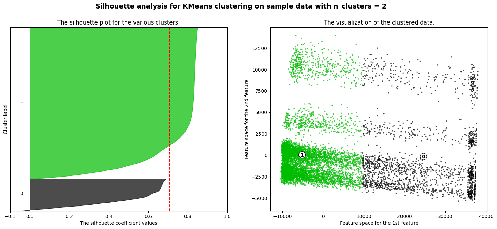
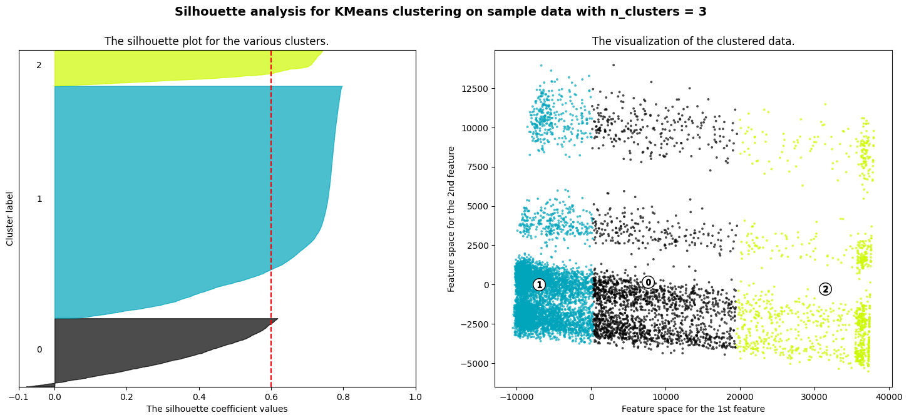
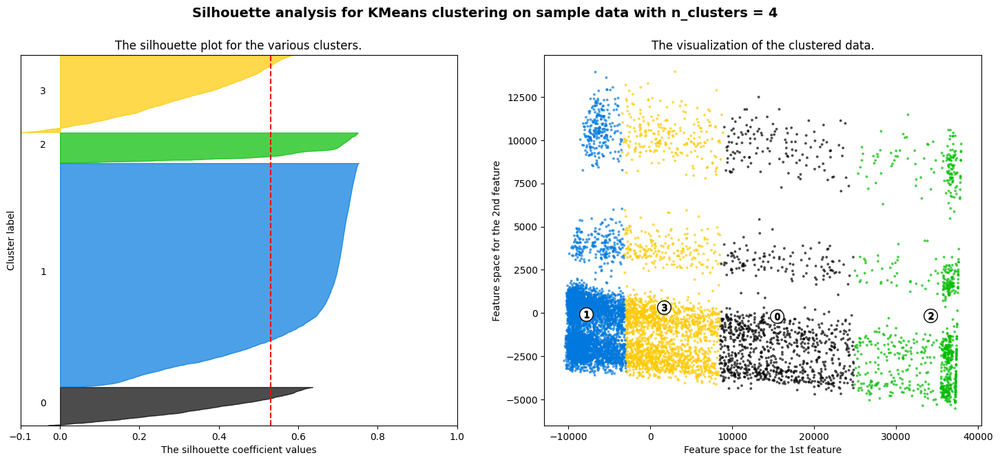
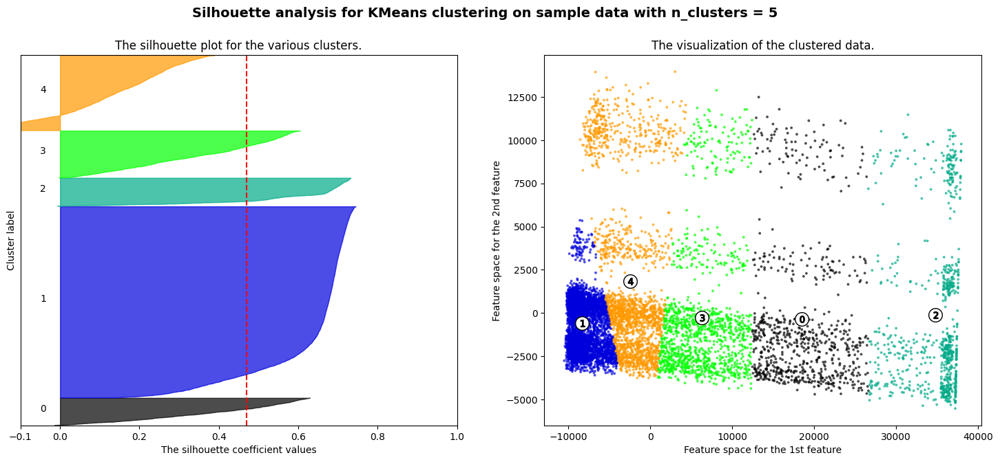
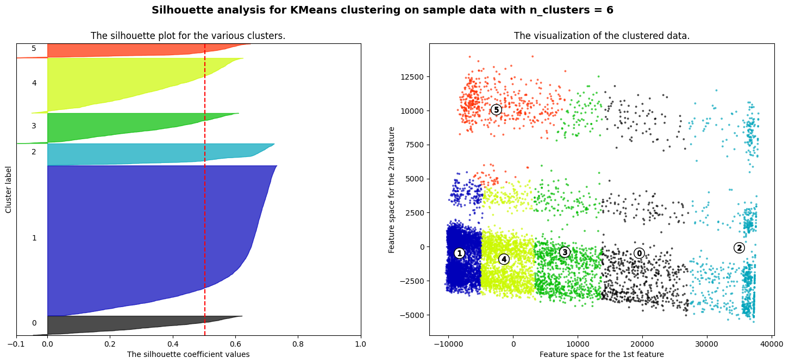
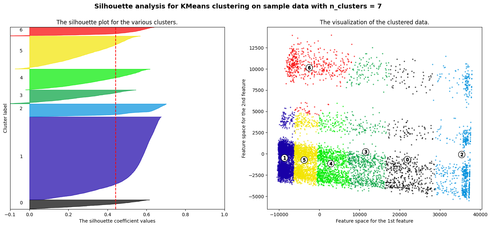
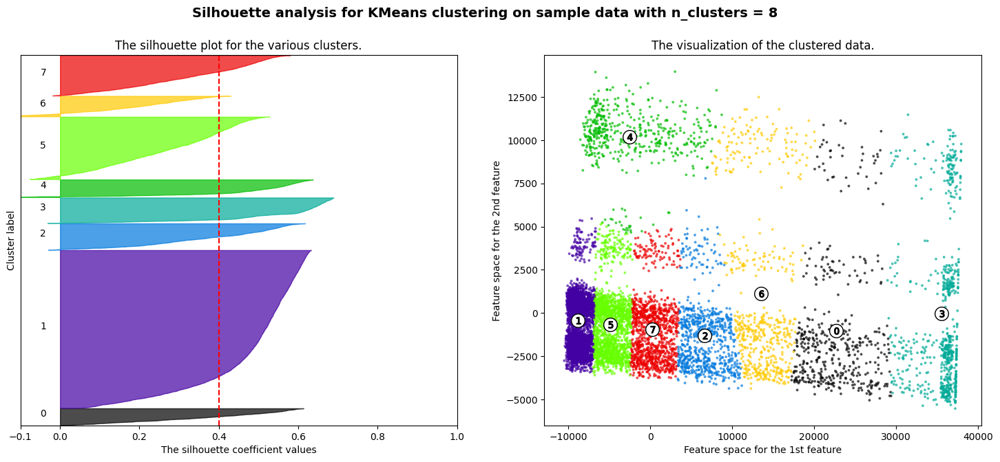
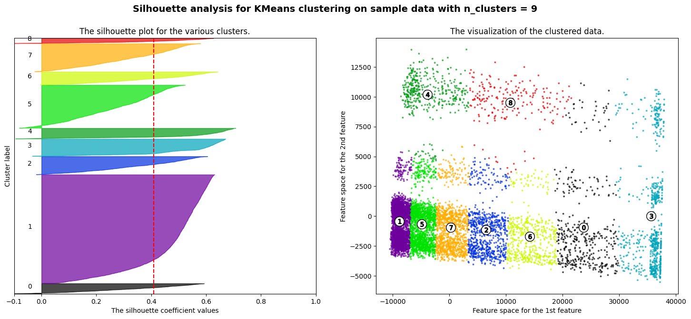
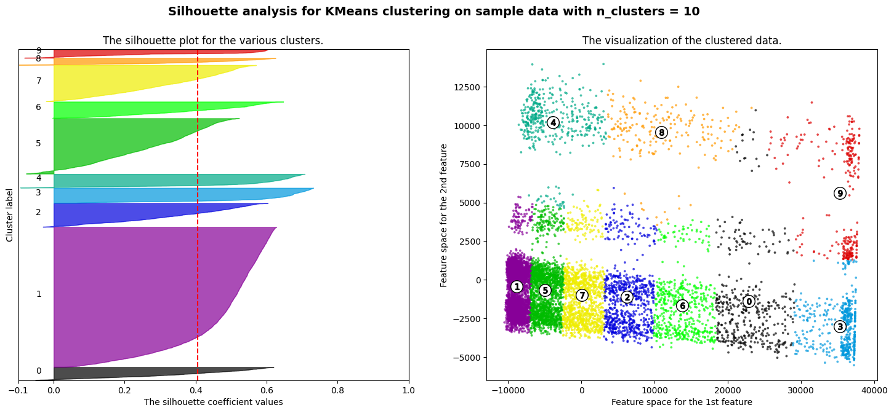
from sklearn.mixture import GaussianMixture
gmm = GaussianMixture(n_components=4)
gmm.fit(data_pca)
GaussianMixture(n_components=4)In a Jupyter environment, please rerun this cell to show the HTML representation or trust the notebook.
On GitHub, the HTML representation is unable to render, please try loading this page with nbviewer.org.
GaussianMixture(n_components=4)
gmm.predict_proba(data_pca)
array([[0.00000000e+00, 1.06913546e-11, 0.00000000e+00, 1.00000000e+00],
[1.00000000e+00, 0.00000000e+00, 4.30784851e-13, 0.00000000e+00],
[0.00000000e+00, 5.67766538e-22, 0.00000000e+00, 1.00000000e+00],
...,
[9.99999998e-01, 0.00000000e+00, 2.18267972e-09, 0.00000000e+00],
[9.76923126e-01, 0.00000000e+00, 2.30768739e-02, 0.00000000e+00],
[1.00000000e+00, 0.00000000e+00, 0.00000000e+00, 0.00000000e+00]])
np.exp(gmm.score_samples(data_pca))
array([8.54370731e-17, 1.94294065e-38, 2.76396264e-31, ...,
1.25794089e-20, 1.99084993e-23, 1.40644272e-22])
import numpy as np
import matplotlib.pyplot as plt
from sklearn.mixture import GaussianMixture
from scipy.stats import multivariate_normal
pca = PCA(n_components=2)
pca.fit(data_zscore)
data_pca = pca.transform(data_zscore)
# Fit a Gaussian Mixture Model with 3 components
gmm = GaussianMixture(n_components=4, random_state=42)
gmm.fit(data_pca)
# Create a meshgrid for plotting
x, y = np.meshgrid(np.linspace(data_pca[:,0].min(), data_pca[:,0].max(), 100), np.linspace(data_pca[:,1].min(), data_pca[:,1].max(), 100))
grid = np.c_[x.ravel(), y.ravel()]
# Compute PDF values for each component
#pdf_values = [weight * multivariate_normal(mean, cov).pdf(grid)
# for mean, cov, weight in zip(gmm.means_, gmm.covariances_, gmm.weights_)]
#pdf1, pdf2, pdf3 = pdf_values
# Reshape PDF values for contour plotting
#pdf_values = np.sum(pdf_values, axis=0).reshape(x.shape)
# Plot the GMM components and contours
#plt.figure(figsize=(10, 8))
plt.scatter(data_pca[:, 0], data_pca[:, 1], alpha=0.5, label='Data Points', s=10)
#plt.scatter(gmm.means_[:, 0], gmm.means_[:, 1], color='red', marker='x', label='Gaussian Means')
#plt.contour(x, y, np.array(pdf1).reshape(x.shape), levels=5, colors='blue', alpha=0.5)
#plt.contour(x, y, np.array(pdf2).reshape(x.shape), levels=5, colors='orange', alpha=0.5)
#plt.contour(x, y, np.array(pdf3).reshape(x.shape), levels=5, colors='green', alpha=0.5)
pdf_values = np.exp(gmm.score_samples(grid)).reshape(x.shape)
# Plot contours for the GMM
plt.contour(x, y, pdf_values, levels=100, colors='red', alpha=0.5)
plt.title('GMM in 2D with Three Components')
plt.xlabel('X-axis')
plt.ylabel('Y-axis')
plt.legend()
plt.show()
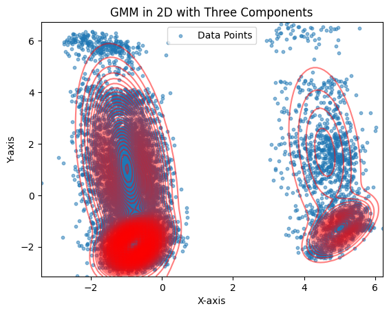
pdf_values.shape
(10000,)